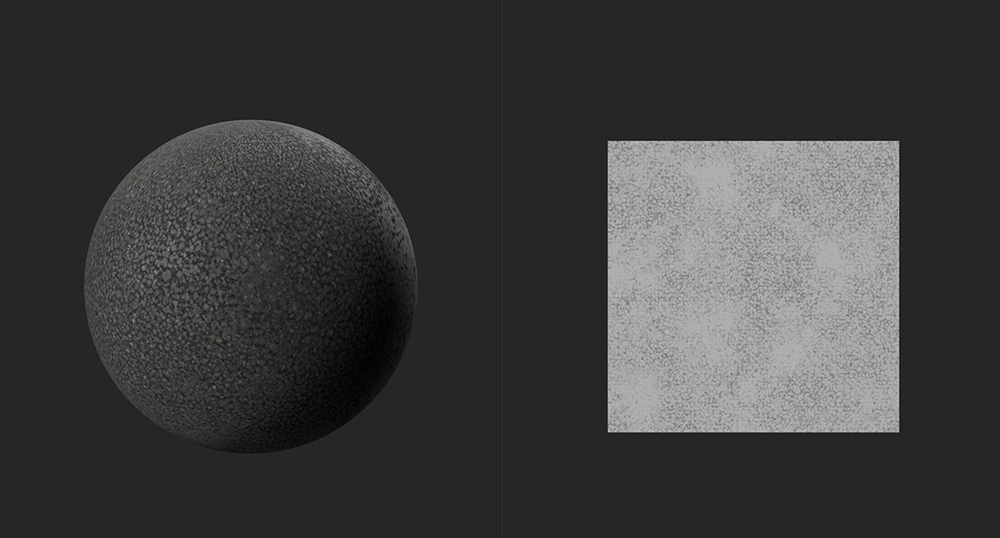
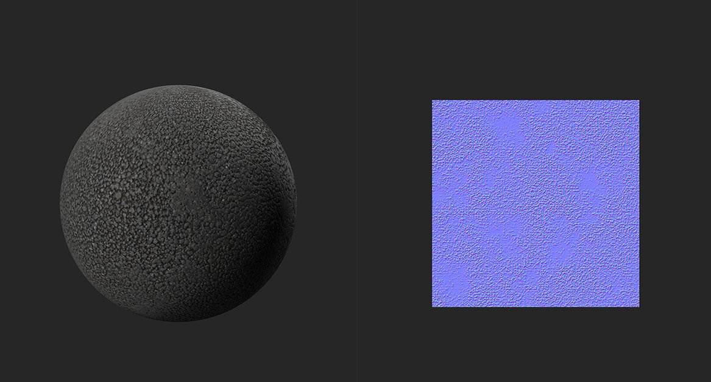

In: Tools
Generate Normal channel data based on the height channel.
In the images below you can see the Height to Normal filter in action.

In the image above, there is no normal data from the material. Only the height map is available, and shown in the 2D view.

With the Height to Normal filter, normal data is generated from the height map shown in the top image. Light bounces more realistically off the material in the second image thanks to the generated normal map.
Basic parameters
Mask